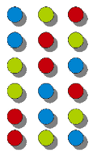

Generators
Introduction
 An iterator can be seen as a pointer to a container, e.g. a list structure, that can iterate over all
the elements of this container. The iterator is an abstraction, which enables the programmer to access
all the elements of a container (a set, a list and so on) without any deeper knowledge of the data
structure of this container object.
In some object oriented programming languages, like Perl, Java and Python, iterators are implicitly
available and can be used in foreach loops, corresponding to for loops in Python.
An iterator can be seen as a pointer to a container, e.g. a list structure, that can iterate over all
the elements of this container. The iterator is an abstraction, which enables the programmer to access
all the elements of a container (a set, a list and so on) without any deeper knowledge of the data
structure of this container object.
In some object oriented programming languages, like Perl, Java and Python, iterators are implicitly
available and can be used in foreach loops, corresponding to for loops in Python.
Generators are a special kind of function, which enable us to implement or generate iterators.
Iterators are a fundamental concept of Python.
Mostly, iterators are implicitly used, like in the for loop of Python, as can be seen in the
following example:
>>> towns = ["Paris","Berlin","London","Vienna"]
>>> for location in towns:
... print("location: " + location)
...
location: Paris
location: Berlin
location: London
location: Vienna
>>>
The sequential base types as well as the majority of the classes of the standard library of Python
support iteration. The dictionary data type dict supports iterators as well. In this case the
iteration runs over the keys of the dictionary:
>>> capitals = { "France":"Paris", "Netherlands":"Amsterdam", "Germany":"Berlin", "Switzerland":"Bern" }
>>> for country in capitals:
... print("The capital city of " + country + " is " + capitals[country])
...
The capital city of Switzerland is Bern
The capital city of Netherlands is Amsterdam
The capital city of Germany is Berlin
The capital city of France is Paris
>>>
Generators
Generators are a simple and powerful possibility to create or to generate iterators. On the surface they look like functions, but there is both a syntactical and a semantical difference. Instead of return statements you will find inside of the body of a generator only yield statements, i.e. one or more yield statements.Another important feature of generators is that the local variables and the execution start is automatically saved between calls. This is necessary, because unlike an ordinary function successive calls to a generator function don't start execution at the beginning of the function. Instead, the new call to a generator function will resume execution right after the yield statement in the code, where the last call exited. In other words: When the Python interpreter finds a yield statement inside of an iterator generated by a generator, it records the position of this statement and the local variables, and returns from the iterator. The next time this iterator is called, it will resume execution at the line following the previous yield statement. There may be more than one yield statement in the code of a generator or the yield statement might be inside the body of a loop. If there is a return statement in the code of a generator, the execution will stop with a StopIteration exception error if this code is executed by the Python interpreter.
Everything what can be done with a generator can be implemented with a class based iterator as well. But the crucial advantage of generators consists in automatically creating the methods __iter__() and next().
Generators provide a very neat way of producing data which is huge or infinite.
The following is a simple example of a generator, which is capable of producing four city names:
def city_generator():
yield("Konstanz")
yield("Zurich")
yield("Schaffhausen")
yield("Stuttgart")
It's possible to create an iterator with this generator, which generates one after the other
the four cities Konstanz, Zurich, Schaffhausen and Stuttgart.
>>> from city_generator import city_generator >>> x = city_generator() >>> print(next(x)) Traceback (most recent call last): File "<stdin>", line 1, in <module> AttributeError: 'generator' object has no attribute 'next' >>> print(next(x)) Konstanz >>> print(next(x)) Zurich >>> print(next(x)) Schaffhausen >>> print(next(x)) Stuttgart >>> print(next(x)) Traceback (most recent call last): File "<stdin>", line 1, in <module> StopIterationAs we can see, we have generated an iterator x in the interactive shell. Every call of the method next() returns another city. After the last city, i.e. Stuttgart, has been created, another call of next(x) raises an error, saying that the iteration has stopped, i.e. "StopIteration".
Can we send a reset to an iterator is a frequently asked question, so that it can start the iteration all over again. There is no reset, but it's possible to create another generator. This can be done e.g. by having the statement "x = city_generator()" again.
Thought at first sight the yield statement looks like the return statement of a function, we can see in this example, that there is a big difference. If we had a return statement instead of a yield in the previous example, it would be a function. But this function would always return "Konstanz" and never any of the other cities, i.e. Zurich, Schaffhausen or Stuttgart.
Method of Operation
As we have elaborated in the introduction of this chapter, the generators offer a comfortable
method to generate iterators, and that's why they are called generators.
Method of working:
- A generator is called like a function. It's return value is an iterator object. The code of the generator will not be executed in this stage.
- The iterator can be used by calling the next method. The first time the execution starts like a function, i.e. the first line of code within the body of the iterator. The code is executed until a yield statement is reached.
- yield returns the value of the expression, which is following the keyword yield. This is like a function, but Python keeps track of the position of this yield and the state of the local variables is stored for the next call. At the next call, the execution continues with the statement following the yield statement and the variables have the same values as they had in the previous call.
- The iterator is finished, if the generator body is completely worked through or if the program flow encounters a return statement without a value.
The Fibonacci sequence is named after Leonardo of Pisa, who was known as Fibonacci (a contraction of filius Bonacci, "son of Bonaccio"). In his textbook Liber Abaci, which appeared in the year 1202) he had an exercise about the rabbits and their breeding: It starts with a newly-born pair of rabbits, i.e. a male and a female animal. It takes one month until they can mate. At the end of the second month the female gives birth to a new pair of rabbits. Now let's suppose that every female rabbit will bring forth another pair of rabbits every month after the end of the first month. We have to mention, that Fibonacci's rabbits never die. They question is how large the population will be after a certain period of time.
This produces a sequence of numbers: 0,1,1,2,3,5,8,13
This sequence can be defined in mathematical terms like this:
Fn = Fn - 1 + Fn - 2
with the seed values:
F0 = 0 and F1 = 1
def fibonacci(n):
"""Ein Fibonacci-Zahlen-Generator"""
a, b, counter = 0, 1, 0
while True:
if (counter > n):
return
yield a
a, b = b, a + b
counter += 1
f = fibonacci(5)
for x in f:
# no linefeed is enforced by end="":
print(x, " ", end="") #
print()
The generator above can be used to create the first n Fibonacci numbers, or better
(n+1) numbers because the 0th number is also included.
In the next example we show you a version which is capable of returing an endless iterator. We have to take care when we use this iterator, that a termination criterium is used:
def fibonacci():
"""Ein Fibonacci-Zahlen-Generator, unendlich"""
a, b = 0, 1
while True:
yield a
a, b = b, a + b
f = fibonacci()
counter = 0
for x in f:
print(x, " ", end="")
counter += 1
if (counter > 10):
break
print()
Recursive Generators

Like functions generators can be recursively programmed.
The following example is a generator to create all the permutations of a given list
of items.
For those who don't know what permutations are, we have a short introduction:
Formal Definition:
A permutation is a rearrangement of the elements of an ordered list. In other words: Every
arrangement of n elements is called a permutation.
In the following lines we show you all the permutations of the letter a, b and c:
a b c
a c b
b a c
b c a
c a b
c b a
The number of permutations on a set of n elements is given by n!
n! = n*(n-1)*(n-2) ... 2 * 1
n! is called the factorial of n.
The permutation generator can be called with an arbitrary list of objects.
The iterator returned by this generator generates all the possible permutations:
def permutations(items):
n = len(items)
if n==0: yield []
else:
for i in range(len(items)):
for cc in permutations(items[:i]+items[i+1:]):
yield [items[i]]+cc
for p in permutations(['r','e','d']): print(''.join(p))
for p in permutations(list("game")): print(''.join(p) + ", ", end="")
The previous example can be hard to understand for newbies. As often, Python offers a convenient
solution. We need the module itertools for this purpose. Itertools is a very handy tool to create
and operate on iterators.
Creating permutations with itertools:
>>> import itertools
>>> perms = itertools.permutations(['r','e','d'])
>>> perms
<itertools.permutations object at 0x7fb0da3e4a70>
>>> list(perms)
[('r', 'e', 'd'), ('r', 'd', 'e'), ('e', 'r', 'd'), ('e', 'd', 'r'), ('d', 'r', 'e'), ('d', 'e', 'r')]
>>>
The term "permutations" can sometimes be used in a weaker meaning. Permutations can denote in this weaker
meaning a sequence of elements, where each element occurs just once, but without the requirement to contain
all the elements of a given set. So in this sense (1,3,5,2) is a permutation of the set of digits {1,2,3,4,5,6}.
We can build for example all the sequences of a fixed length k of elements taken from a given set of size n with
k ≤ n.
These are are all the 3-permutations of the set {"a","b","c","d"}:
['a', 'b', 'c'] ['a', 'b', 'd'] ['a', 'c', 'b'] ['a', 'c', 'd'] ['a', 'd', 'b'] ['a', 'd', 'c'] ['b', 'a', 'c'] ['b', 'a', 'd'] ['b', 'c', 'a'] ['b', 'c', 'd'] ['b', 'd', 'a'] ['b', 'd', 'c'] ['c', 'a', 'b'] ['c', 'a', 'd'] ['c', 'b', 'a'] ['c', 'b', 'd'] ['c', 'd', 'a'] ['c', 'd', 'b'] ['d', 'a', 'b'] ['d', 'a', 'c'] ['d', 'b', 'a'] ['d', 'b', 'c'] ['d', 'c', 'a'] ['d', 'c', 'b']
These atypical permutations are also known as sequences without repetition. By using this term we can avoid confusion with the term "permutation". The number of such k-permutations of n is denoted by Pn,k and its value is calculated by the product:
n · (n - 1) · … (n - k + 1)
By using the factorial notation, the above expression can be written as:
Pn,k = n! / (n - k)!A generator for the creation of k-permuations of n objects looks very similar to our previous permutations generator:
def k_permutations(items, n):
if n==0: yield []
else:
for i in range(len(items)):
for ss in k_permutations(items, n-1):
if (not items[i] in ss):
yield [items[i]]+ss
A Generator of Generators
The second generator of our Fibonacci sequence example generates an iterator, which can theoretically produce all the Fibonacci numbers, i.e. an infinite number. But you shouldn't try to produce all these numbers, as we would do in the following example:
list(fibonacci())This will show you very fast the limits of your computer.
In most practical applications, we only need the first n elements of an "endless" iterator. We can use another generator, in our example firstn, to create the first n elements of a generator g:
def firstn(g, n): for i in range(n): yield next(g)The following script returns the first 10 elements of the Fibonacci sequence:
#!/usr/bin/env python3
def fibonacci():
"""Ein Fibonacci-Zahlen-Generator"""
a, b = 0, 1
while True:
yield a
a, b = b, a + b
def firstn(g, n):
for i in range(n):
yield next(g)
print(list(firstn(fibonacci(), 10)))
The output looks like this:
[0, 1, 1, 2, 3, 5, 8, 13, 21, 34]